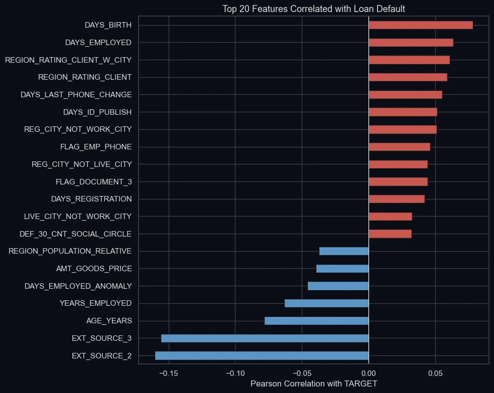

Run the model
What the numbers say
On 61,503 held-out applications, 4,965 of which defaulted. Logistic regression set the floor at an AUC of 0.60.
| Metric | Logistic regression | XGBoost | XGBoost, tuned |
|---|---|---|---|
| AUC | 0.60 | 0.74 | 0.75 |
| Default recall | 0.50 | 0.44 | 0.40 |
| Default precision | 0.11 | 0.21 | 0.24 |
| Default F1 | 0.17 | 0.28 | 0.30 |
Why the line moved
At the default threshold of 0.50 the model looked accurate, 92%, and was nearly useless: it caught 4% of defaulters. For a lender a missed default costs far more than a second look, so I swept the threshold and took the one that maximised F1 for the default class. That was 0.18.
The scores are not calibrated probabilities. The model trained on SMOTENC-balanced data, where defaults are far more common than the real 8%, so it scores everyone high. That is part of why the useful threshold sits so low, and why I call the number a score.
What drives it
The external credit scores dominate, in the correlations and in SHAP. Two engineered features earned their place: the ratio of credit to income, and a flag for 55,374 applicants (18%) whose employment length held a placeholder of 365,243 days, meaning unemployed or retired.



Keeping the test honest
I split before anything else, then ran SMOTENC inside an imbalanced-learn pipeline, so synthetic defaulters were created within each training fold and never leaked into validation. The minority class grew from 19,860 to 226,148 samples in training only. Hyperparameters came from a randomised search with stratified three-fold cross-validation.
What I would do next
- Remove gender from the inputs and test the model for proxies of it. It was a feature here; a lender could not use it. (This demo holds it fixed.)
- Calibrate the scores on held-out data, so 0.30 means a 30% chance.
- Choose the threshold from the cost of each error rather than F1.